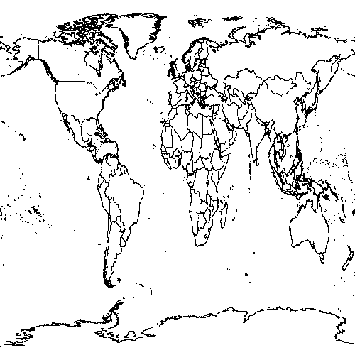

Ellipsoidal Transverse Mercator Projection
lon0=
(central meridian)
k0=
(scale on the central meridian)
a=
(the ellipsoid via the equatorial radius)
f=
(the ellipsoid via the equatorial flattening)
